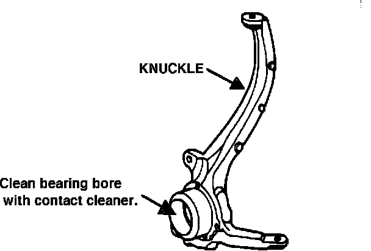
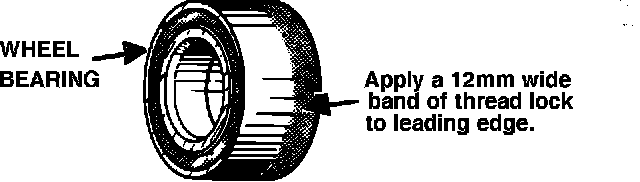

Front Steering Knuckle - Clunk
87acura01November 16, 1987
YEAR MODEL APPLICATION
'86-87 LEGEND ALL
SEDAN
87-033
Legend Sedan Front Steering Knuckle Clunk
PROBLEM An audible "clunk" occurs when cornering briskly. This noise usually occurs once per corner, and cornering in the opposite direction produces another single clunk.
PROBABLE CAUSE The outer race of the front wheel bearing moves within the front knuckle.

CORRECTIVE ACTION
1. Remove the affected front knuckle from the car, as described in the Service Manual, page 18-9.
2. Remove the wheel bearing from the knuckle (page 18-11).
3. Thorougly clean the bearing bore in the knuckle with contact cleaner.
4. Clean the outer race of a new front wheel bearing with contact cleaner. Keep the contact cleaner away from the inner race and seals.

5. Apply a 12 mm wide band of an anaerobic thread lock, such as Acura Thread Lock, to the leading edge of new wheel bearing. Press the bearing into the hub.
NOTE: Do not apply too much thread lock: a thin, even coat is best.
6. Reinstall the front knuckle.
NOTE: Allow the thread lock to cure for 5.6 hours before test driving the car.
PARTS INFORMATION Front wheel bearing:
P/N 44300-SD4-000
Thread Lock P/N 08713-5500001OE
WARRANTY CLAIM INFORMATION
Operation number: 415029 (both) 415069 (left) 415079 (right)
Flat rate time: 2.2 hours (both) 1.3 hours (left or right)
Failed part P/N: 44300-SD4-000
Defect code: 042
Contention code: B07